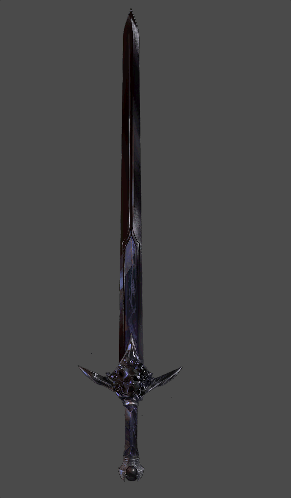

|  | . . |
swords21 june, 24(originally typed on 24 june,23) Why should you care? Life is based on strategy and battleship if seen from the eyes of a swordsman, a single warrior, or an eagle present in a human. Among mere humans, one thing is fixed: those alpha people around you or those chads are no different but acknowledge the need of being resilient and strong in this small world where every bit of time has a chance of your death because everyone wants to kill everyone. Now as you care What should you do now? Become a warrior or just make up your mind that you will come out stronger now to fight? Whatever it is, it will take time. Swords are not always double-edged but can be a shield too when life is throwing a tantrum on you and you can only shield yourself. What I mean is, you need to adopt the mindset of a fighter and become afraid of nobody, not even yourself. Yes, you read it right, sometimes we are afraid of ourselves because we doubt if we’d be able to go through something, and that something is known as fear. Fear is nothing but a wall in our head that doesn’t let us see our true potential. Well, the answer to it is just to face it and move through it. -<:> |